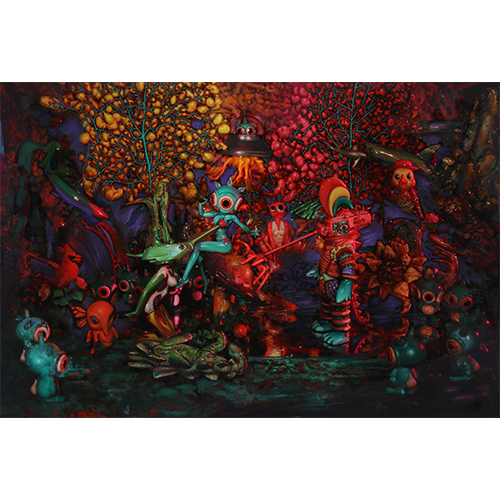
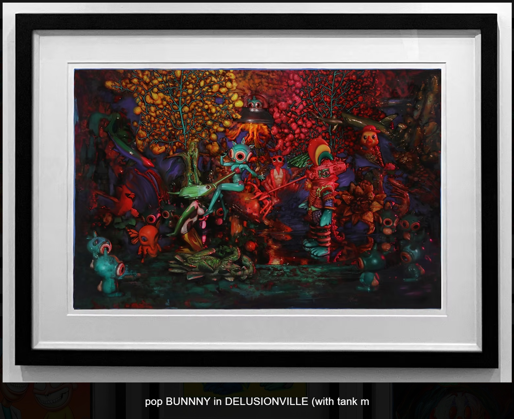

Exhibitions
POPaganda on Paper, Pop International Galleries, virtual exhibition, September 17–October 15, 2020.
Notes
This work appears on Artsy’s artwork page as Bunnny in Delusionville, where it is listed as a 2020 original oil and acrylic on paper measuring 26 × 24 inches (66 × 61 cm), unique, hand-signed by the artist, with frame included, available here, accessed April 17, 2026.
It also appears on Pop International Galleries’ Ron English page, available here, accessed April 17, 2026.
Artsy’s listing conflicts with the current catalogue record on signature status.
Ancillary Documentation

